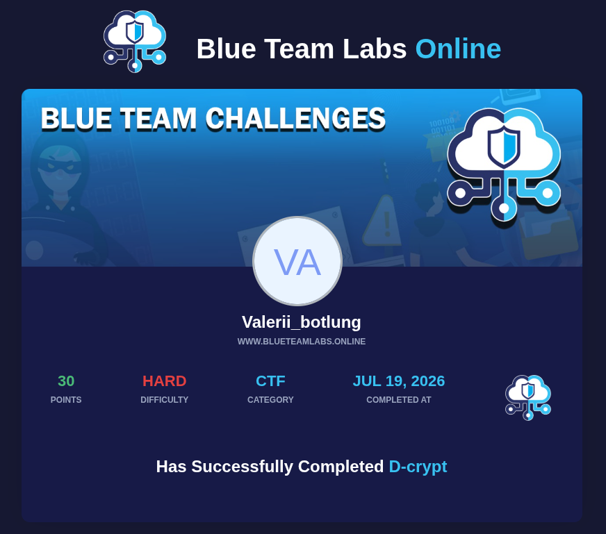

| Параметр | Значение |
|---|---|
| Категория | Digital Forensics / Cryptography |
| Платформа | Blue Team Labs Online Achievement |
| Никнейм | valebg |
Спецслужбы перехватили заархивированный файл у подозреваемого в терроризме, который пытался отправить его сообщнику. Наша задача — провести глубокий анализ артефактов, восстановить скрытый контекст и извлечь финальное секретное сообщение.

Первым делом запускаем сбор метаданных через exiftool и проверяем файл на наличие скрытых контейнеров с помощью стандартного инструмента steghide:
exiftool SBT.jpg steghide extract -sf SBT.jpg
Проверяем структуру файла на наличие скрытых текстовых строк или сигнатур других файлов с помощью утилиты strings:
strings SBT.jpg
В самом конце вывода обнаруживается упоминание файла message.png. Пробуем распаковать файл напрямую через unzip:
unzip SBT.jpg
Проверяем реальный тип извлеченного файла с помощью команды file:
file message.png
Декодируем URL-строку и отправляем полученный шифротекст на анализ в dCode. Применяем ROT-47.
Декодируем полученную массу через Base32. Разворачиваем полученную строку задом наперед (Reverse).
После реверса прогоняем строку через Base64 Decode в CyberChef. На выходе получаем визуально пустой результат, состоящий исключительно из невидимых символов — пробелов (Spaces) и табуляций (Tabs).
Переводим невидимый Whitespace-код в бинарный вид (пробелы — 0, табуляции — 1) и конвертируем финальные байты в текст: